Taverne de la Tête du Sanglier
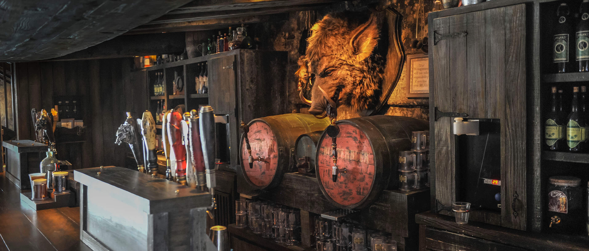
Lieux : Soins
- Chaque _Personnage_ déjà révélée, ou se révélant, peut venir y boire une _Bièraubeurre_ et échanger / donner des cartes.
Je crois que l'endroit est un peu... comment dire... un peu louche...
Hôpital Ste-Mangouste
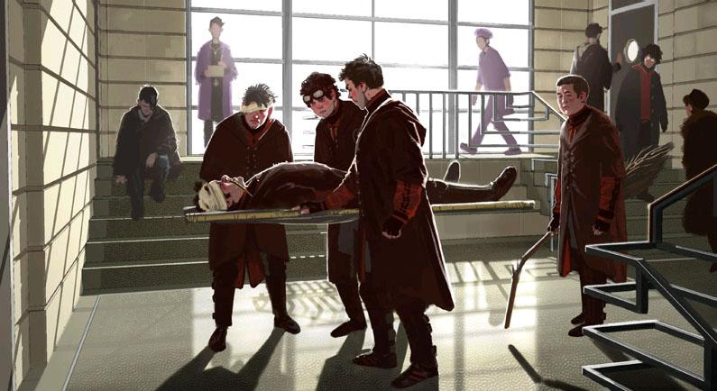
Lieux : Soins
- Interdit aux Antagonistes.
- Chaque _Personnage_ au _SdM_ peut être soigné de 1 Blessure.
- Vous pouvez être soigné de 2 Blessures.
Des médecins ? Tu veux dire ces Moldus cinglés qui coupent les gens en morceaux ? Non, eux, ce sont des guérisseurs.
Madame Guipure
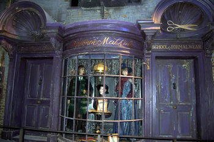
Lieux : Equipements
- Vous pouvez récupérer la première carte "Corps" ou "Tête" de la pile _Equipement_, puis mélangez la pile.
Barjow et Beurk
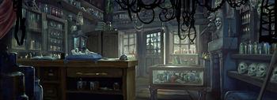
Lieux : Equipements
- Vous pouvez récupérer une charge sur la compétence de l'_Equipement_ de votre choix, 2 charges si vous êtes un Antagoniste.
- Pour deux points d'_Equipement_, vous pouvez acheter la _Main de la gloire_ depuis la pile d'_Equipement_ ou _Marchand d'or_, puis mélangez la / les pile(s).
Gregorovith Zauberstäbe
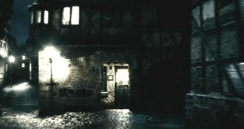
Lieux : Equipements
- Vous pouvez récupérer une charge sur la compétence de l'_Equipement_ de votre choix.
- Vous pouvez regagner 1 charge supplémentaire pour 1 points d'_Equipement_, utilisable plusieurs fois sur plusieurs _Equipements_.
Assaut de Gregorovitch : - Vous ne pouvez tenter ceci que si vous êtes le premier à le faire.
- Attaquez Gregorovitch. Si l'attaque est supérieure à 5, emparez-vous de la _Baguette de Sureau_ dans les piles _Equipement_ et / ou _Marchand_, puis mélangez les piles fouillées.
- Les effets de ce Lieu ne vous affecteront pas jusqu'à la fin de la partie.
La Forêt Interdite
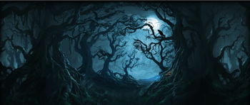
Lieux : Evènements
- Lancez les dés pour faire une rencontre aléatoire dans La Forêt Interdite.
- Vous pouvez demander de l'aide à un autre _Personnage_ à une case de ce _Lieu_. Il peut remplir les conditions de victoire à votre place et négocier son aide, il subira aussi la défaite.
Il y a des tas de bestioles là-dedans, même des loups-garous d'après ce qu'on m'a dit.
Azkaban
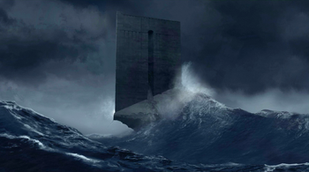
Lieux : Evènements
- Vous pouvez attaquer un autre _Personnage_ à votre portée, en cas de victoire, il sera enfermé et ne subira pas de blessure.
- Au début de son prochain tour, il devra faire un double ou un 7 en lançant les dés pour en sortir, sinon, il perds un _Equipement_ ou une carte de sa main aléatoirement, et ainsi de suite. S'il n'a plus rien, il poursuivra son tour normalement.
Ils sont enfermés dans leur propre tête, incapables d'avoir la moindre pensée agréable.
Salle de la coupe de feu
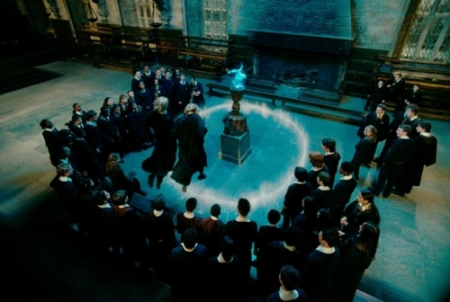
Lieux : Evènements
- Chaque _Personnage_ à moins de 3 Blessures peut participer.
- Il faut 3 _Personnages_ participants minimum. La coupe sélectionne aléatoirement 3 _Personnages_ parmi ceux proposés.
- Au bout de 3 tours de jeu globaux, le participant le moins blessé remporte la coupe (5 points dans le comptage final), et 3 _Equipements_ et 2 _Consommables_.
- Une fois la coupe remportée, défausser définitivement ce lieu.
Tribunal magique
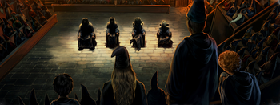
Lieux : Evènements
- Vous pouvez indiquez ce que vous pensez être la quête d'un autre _Personnage_. L'accusé devra indiquer si vous dites vrai ou non, il ne peut mentir.
Barry Croupton Junior !
Forêt de Dean
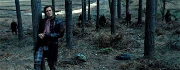
Lieux : Evènements
- Rencontre avec les rafleurs : en commençant par le _Personnage_ qui a découvert ce lieu puis selon l'ordre de jeu, chaque _Personnage_ doit se défendre contre un groupe de rafleurs, si la défense est inférieure à 4, il perds une carte aléatoirement (de votre main ou de vos _Equipements_).
L'allée des embrumes
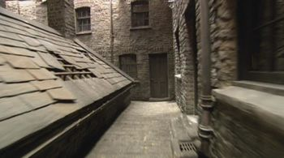
Lieux : Evènements
- Quartier très malfamé : Vos 3 _Equipement_ les plus qualitatifs (dans l'ordre décroissant de qualité) en votre posession vous sont retirés et sont insérés dans la pile du _Marchand d'or_.
C'est un endroit très malfamé. Il ne faut surtout pas que quelqu'un te voie là-bas.
Boutique de Fred et Georges
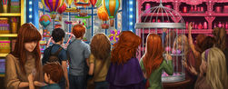
Lieux : Autres
- Goûteur dévoué : Lancez les deux dés :
- 2 : piocher une carte _Retournement_.
- 3 : votre prochain jet de dé sera le score minimum possible.
- 4 : subissez une Blessure, puis soignez-vous 2 Blessures au début de votre prochain tour.
- 5 : vous regagnez une charge sur la compétence de _Personnage_ de votre choix.
- 6 : vous pourrez faire deux lancers de dés pour votre prochain déplacement [TODO - Meilleure idée ?].
- 7 : vous goûtez deux nouvelles dragées, quelle gourmandise !
Vous avez peur de Vous-Savez-Qui ? Craignez plutôt POUSSE-RIKIKI...
La salle sur demande
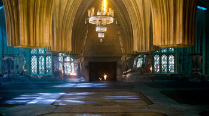
Lieux : Autres
- Vous permet d'avoir l'effet de la case que vous souhaitez.
Si vous devez demander, jamais vous ne saurez. Si vous savez, il suffit de demander.
Banque de Gringotts
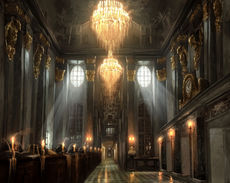
Lieux : Autres
- Vous permet de stocker face cachées / reprendre jusqu'à deux cartes de votre main.
Gringotts est l'endroit le plus sûr du monde. À part Poudlard, peut-être.
Le terrier
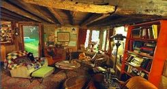
Lieux : Autres
- Doux foyer : Jusqu'à votre prochain tour, personne ne peut vous attaquer, vous ne pouvez attaquer personne.
- Madame Weasley, mère au foyer : Interdit aux Antagonistes, vous êtes soigné d'une blessure.
Chemin de traverse
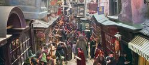
Lieux : Autres
- En commençant par celui qui a découvert le _Chemin de traverse_, puis dans l'ordre de jeu, chaque _Personnage_ peut acheter comme s'il était sur la case marchand d'or.
Le voile
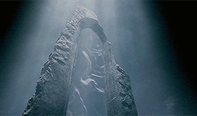
Lieux : Autres
- Actif pendant 2 tours de jeu globaux.
- Il sera impossible d'intéragiravec le corps d'un _Personnage_ décédé pendant que _Le Voile_ est actif.
[...] il n'allait pas tarder à réapparaître de l'autre côté... Sirius, pourtant, ne réapparaissait pas.